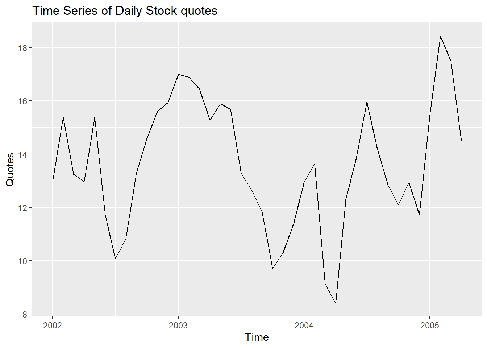
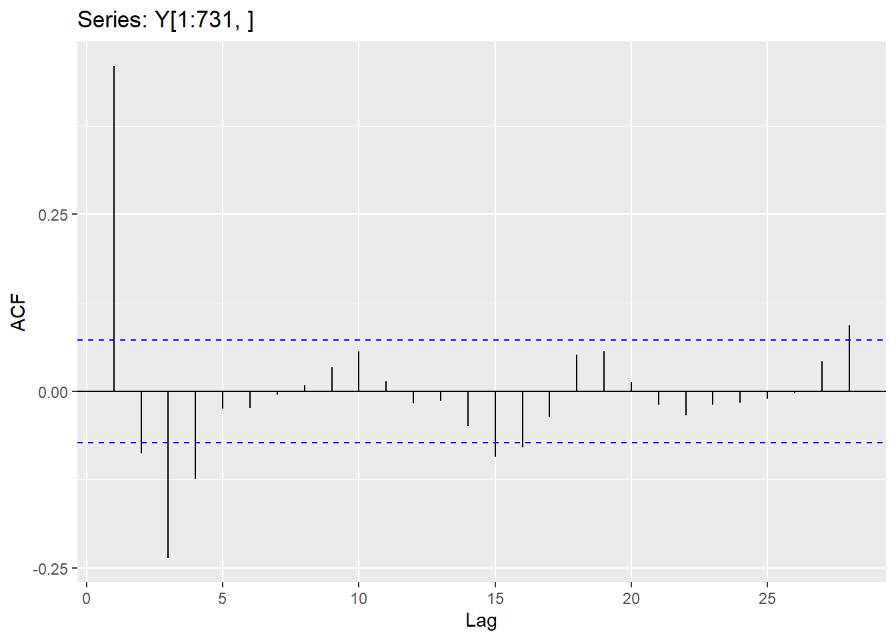
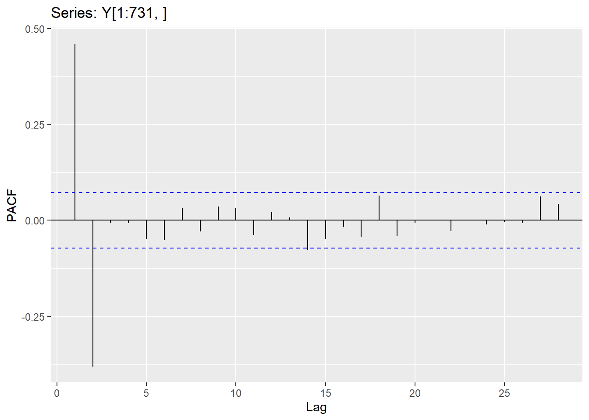
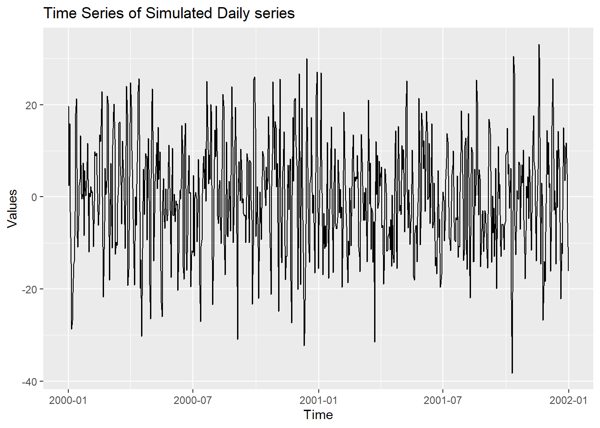
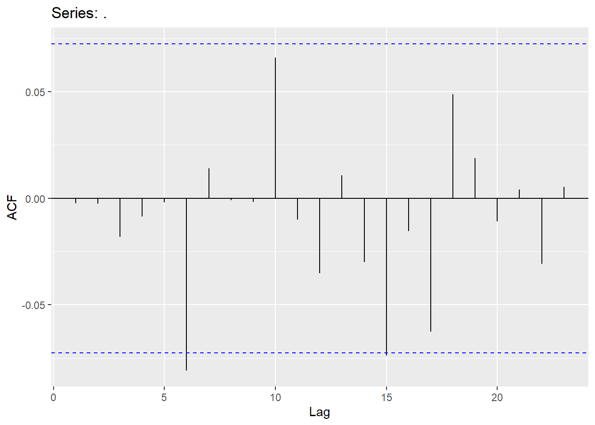
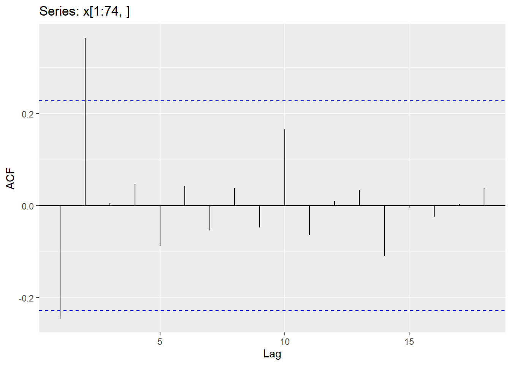
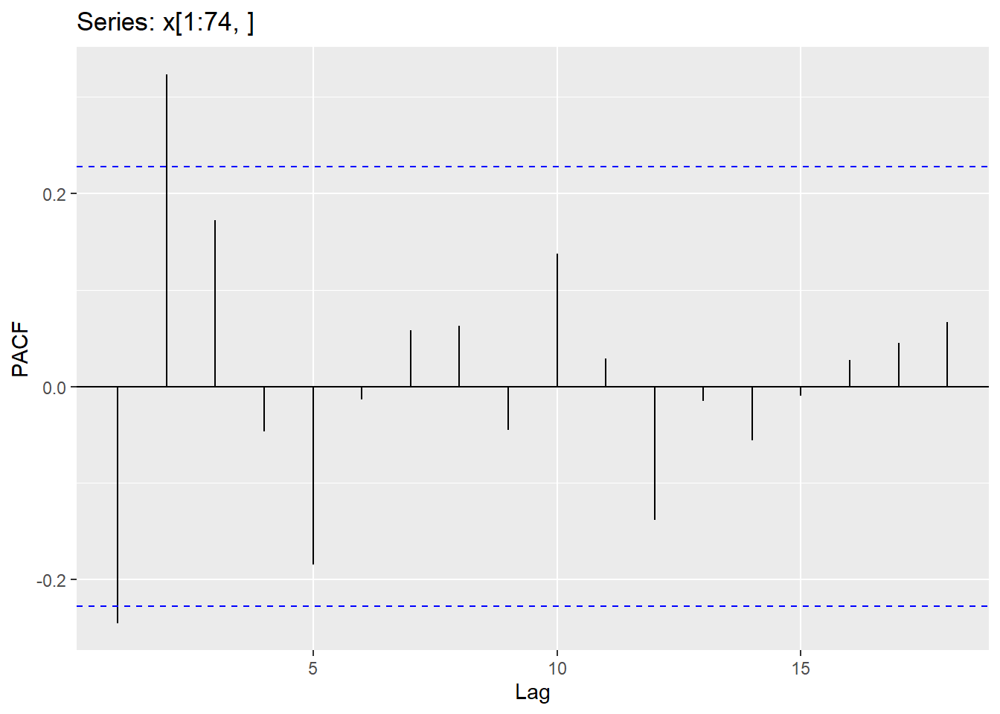
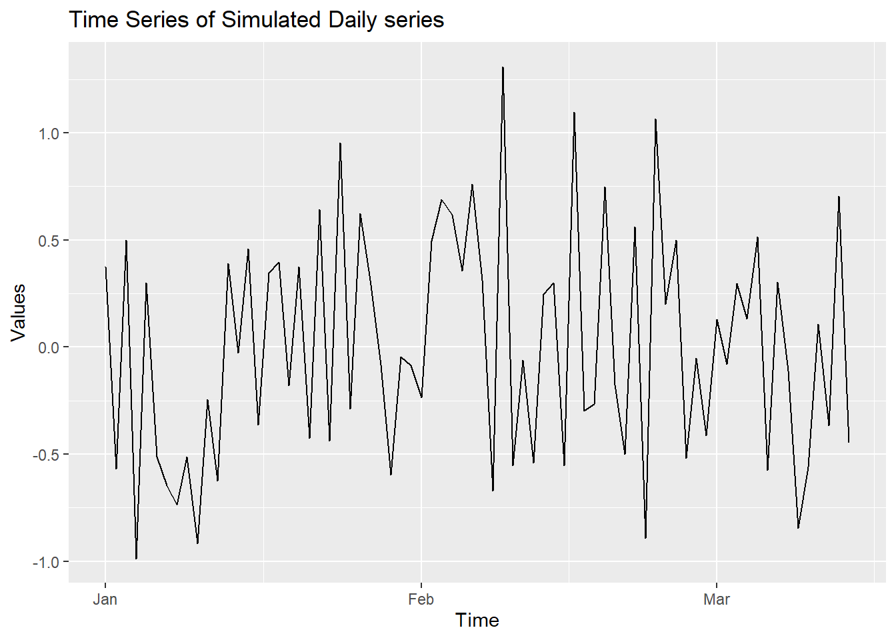
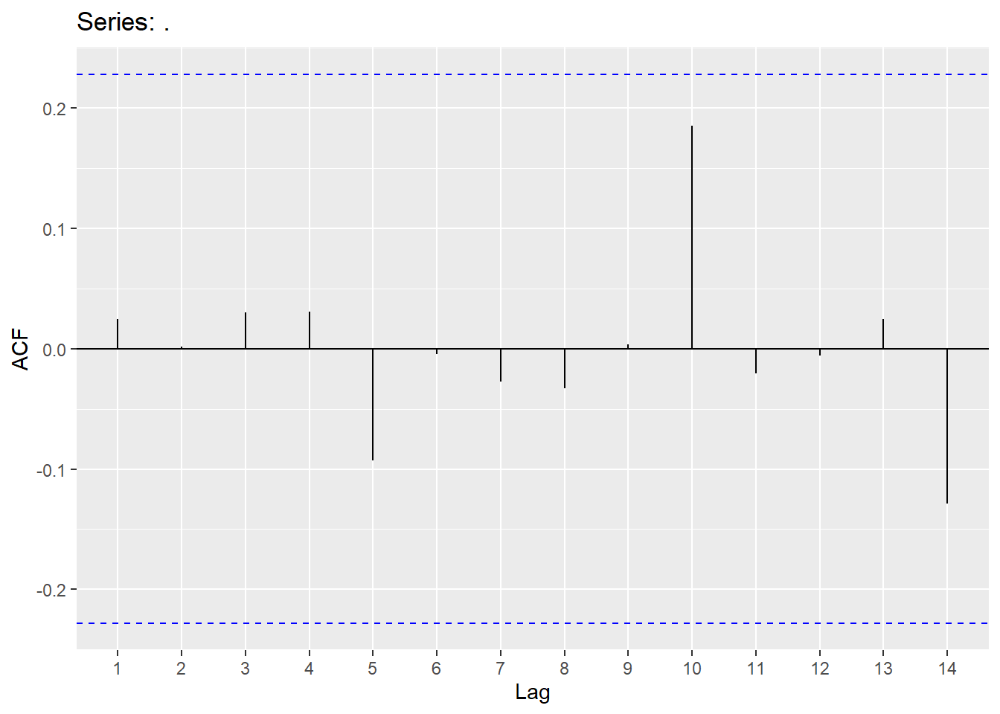

Chapter 4 ARIMA
We will now be switching over to doing ARMA/ARIMA models!! There are a number of different concepts you will need in order to do this type of modeling.
4.1 Stationarity
Before we can try to model the dependency structure (the AR and MA terms), we must first have a stationarity! The ADF test is one of the most well-known and accepted test for testing stationarity. There are several packages that will do this for you, however, below, I am focusing on the ADF test within the package aTSA.
Quotes.ts<-ts(Quotes$Quotes,start=2002,frequency=12)
autoplot(Quotes.ts)+labs(title="Time Series of Daily Stock quotes", x="Time", y="Quotes")
The following code produces output similar to the output seen in SAS (under the tau test).
# Perform the ADF test (k=0)
aTSA::adf.test(Quotes.ts)## Augmented Dickey-Fuller Test
## alternative: stationary
##
## Type 1: no drift no trend
## lag ADF p.value
## [1,] 0 -0.3061 0.550
## [2,] 1 -0.5980 0.458
## [3,] 2 -0.0632 0.620
## [4,] 3 -0.0950 0.611
## Type 2: with drift no trend
## lag ADF p.value
## [1,] 0 -2.66 0.0939
## [2,] 1 -3.42 0.0192
## [3,] 2 -2.45 0.1608
## [4,] 3 -2.36 0.1943
## Type 3: with drift and trend
## lag ADF p.value
## [1,] 0 -2.62 0.3212
## [2,] 1 -3.36 0.0772
## [3,] 2 -2.41 0.4012
## [4,] 3 -2.29 0.4463
## ----
## Note: in fact, p.value = 0.01 means p.value <= 0.014.2 Correlation Functions
The Acf and the Pacf in R will calculate the autocorrelation (up to the lag you specify) and the partial autocorrelation, respectively. You can either output these values to look at them or plot them (see code below).
acf1=Acf(Y, lag=10)$acf
pacf1=Pacf(Y, lag=10)$acf
index1=seq(1,length(pacf1))
all.dat=data.frame(cbind(acf1[2:11],pacf1,index1))
colnames(all.dat)=c("acf","pacf","index")
ggplot(all.dat,aes(x=factor(index),y=acf))+geom_col()+labs(x="Lags")
4.3 AutoRegressive Models (AR)
AutoRegressive (AR) models involve modeling the lags of Y. We can write an autoregressive model as
\[ Y_{t} = c + \phi_{1}Y_{t-1}+\phi_{2}Y_{t-2}+...\phi_{p}Y_{t-p}+\epsilon_{t} \] Where there are p lags of Y. Below is the code to fit an AR(2) model. The order in the Arima function needs the p,d,q values (p=# of AR terms, d=how many differences should be taken and q=# of MA terms).
ggAcf(Y)
ggPacf(Y)
Y.ts <- ts(Y)
Y.ARIMA <- Arima(Y.ts, order=c(2,0,0))
ggAcf(Y.ARIMA$residuals)
ggPacf(Y.ARIMA$residuals)
4.4 Moving Average model (MA)
Moving average (MA) models involve modeling the lags of the error. We can write a moving average model as
\[ Y_{t} = c - \theta_{1}\epsilon_{t-1}-\theta_{2}\epsilon_{t-2}-...\theta_{q}\epsilon_{t-q}+\epsilon_{t} \] Where there are q lags of \(\epsilon\). Below is code to fit an MA(2) model.
ggAcf(x)
ggPacf(x)
x.ts <- ts(x)
x.ARIMA <- Arima(x.ts, order=c(0,0,2))
summary(x.ARIMA)## Series: x.ts
## ARIMA(0,0,2) with non-zero mean
##
## Coefficients:
## ma1 ma2 mean
## -0.2460 0.4772 0.0250
## s.e. 0.0857 0.0923 0.0567
##
## sigma^2 = 0.2207: log likelihood = -65.1
## AIC=138.2 AICc=138.63 BIC=148.62
##
## Training set error measures:
## ME RMSE MAE MPE MAPE MASE
## Training set 0.0008828966 0.4627151 0.3808289 74.99115 114.4434 0.5453401
## ACF1
## Training set -0.002299708ggAcf(x.ARIMA$residuals)
ggPacf(x.ARIMA$residuals)
4.5 White noise
For residuals to exhibit white noise, they must be “independent” and normally distributed with mean 0 and constant variance. You already know how to assess normality and constant variance, however, we need to focus on assessing “independence”. We can assess if there is significant dependence through the Ljung-Box test. The hypotheses being tested are
\[H_{0}:No\quad significant\quad autocorrelation\\ H_{A}:Significant\qquad autocorrletion \]
This should be assessed on a stationary time series. Looking at a stationary time series, going back 10 lags should be sufficient (this will be different when we get to seasonal models). We would like for all of the p-values (for lags 1-10) to be insignificant (large p-values). However, keep in mind that sample size will matter when assessing significance.
White.LB <- rep(NA, 10)
for(i in 1:10){
White.LB[i] <- Box.test(Y, lag=i, type="Ljung-Box", fitdf = 0)$p.value
}
white.dat=data.frame(cbind(White.LB,index1))
colnames(white.dat)=c("pvalues","Lag")
ggplot(white.dat,aes(x=factor(Lag),y=pvalues))+geom_col()+labs(title="Ljung-Box test p-values",x="Lags",y="p-values")+coord_cartesian(ylim = c(0, 0.025))
####Fit appropriate model
Y.ARIMA=Arima(Y,order=c(2,0,0))
White.LB <- rep(NA, 10)
for(i in 3:10){
White.LB[i] <- Box.test(Y.ARIMA$residuals, lag=i, type="Ljung-Box", fitdf = 2)$p.value
}
white.dat=data.frame(cbind(White.LB[3:10],index1[3:10]))
colnames(white.dat)=c("pvalues","Lag")
ggplot(white.dat,aes(x=factor(Lag),y=pvalues))+geom_col()+labs(title="Ljung-Box test when there is white noise",x="Lags",y="p-values")
4.6 Trending Series
If the series is trending then it is NOT stationary. You will NEED to do something to the series in order to make it stationary!! You will either fit a linear regression line (then use the residuals to model dependencies) or take differences and use the differenced series to model dependencies. We will be using the Ebay stock data of “Daily High” (however, this data has missing values!!). If you do not impute missing values, it simply ignores the missing values (could create an issue). I would recommend FIRST imputing those values BEFORE doing the ADF test (in the na_interpolation algorithm, missing values are imputed).
Daily.High <- ts(Ebay$DailyHigh)
###NOT appropriate since there are missing values!!
aTSA::adf.test(Daily.High)## Augmented Dickey-Fuller Test
## alternative: stationary
##
## Type 1: no drift no trend
## lag ADF p.value
## [1,] 0 0.410 0.762
## [2,] 1 0.157 0.689
## [3,] 2 0.254 0.717
## [4,] 3 0.327 0.738
## [5,] 4 0.396 0.758
## [6,] 5 0.431 0.768
## Type 2: with drift no trend
## lag ADF p.value
## [1,] 0 -1.79 0.409
## [2,] 1 -1.99 0.331
## [3,] 2 -1.90 0.366
## [4,] 3 -1.89 0.372
## [5,] 4 -1.88 0.375
## [6,] 5 -1.91 0.365
## Type 3: with drift and trend
## lag ADF p.value
## [1,] 0 -1.74 0.687
## [2,] 1 -2.09 0.538
## [3,] 2 -1.94 0.600
## [4,] 3 -1.87 0.632
## [5,] 4 -1.81 0.657
## [6,] 5 -1.80 0.662
## ----
## Note: in fact, p.value = 0.01 means p.value <= 0.01ggplot_na_distribution(Daily.High)+labs(y="Stock prices for Ebay")
# Interpolate the missing observations in this data set
Daily.High<-Daily.High %>% na_interpolation(option = "spline")
autoplot(Daily.High)+labs(title="Daily high stock quotes",x="Time",y="Quotes")
# Perform an ADF test
aTSA::adf.test(Daily.High)## Augmented Dickey-Fuller Test
## alternative: stationary
##
## Type 1: no drift no trend
## lag ADF p.value
## [1,] 0 0.414 0.763
## [2,] 1 0.148 0.687
## [3,] 2 0.266 0.720
## [4,] 3 0.330 0.739
## [5,] 4 0.385 0.755
## [6,] 5 0.434 0.769
## Type 2: with drift no trend
## lag ADF p.value
## [1,] 0 -1.80 0.405
## [2,] 1 -2.01 0.324
## [3,] 2 -1.91 0.364
## [4,] 3 -1.90 0.367
## [5,] 4 -1.90 0.368
## [6,] 5 -1.92 0.361
## Type 3: with drift and trend
## lag ADF p.value
## [1,] 0 -1.76 0.679
## [2,] 1 -2.13 0.520
## [3,] 2 -1.96 0.595
## [4,] 3 -1.89 0.622
## [5,] 4 -1.84 0.642
## [6,] 5 -1.82 0.653
## ----
## Note: in fact, p.value = 0.01 means p.value <= 0.01### Definitely a Random Walk!!How do we fit each situation? If the series is stationary about the line, we need to fit a line (and then model the AR and MA terms on the residuals). If series is a random walk with drift, then need to take differences. Here is the R code for each situation.
###Fitting a regression line...
time.high=seq(1,length(Daily.High))
ARIMA.line=Arima(Daily.High,order=c(0,0,0),xreg=time.high)
summary(ARIMA.line)## Series: Daily.High
## Regression with ARIMA(0,0,0) errors
##
## Coefficients:
## intercept xreg
## 58.1845 0.3942
## s.e. 4.3071 0.0234
##
## sigma^2 = 1477: log likelihood = -1610.58
## AIC=3227.17 AICc=3227.24 BIC=3238.45
##
## Training set error measures:
## ME RMSE MAE MPE MAPE MASE
## Training set 4.157949e-12 38.31299 31.05748 -31.93382 49.92292 6.324794
## ACF1
## Training set 0.9819061#### Now model residuals (ARIMA.line$residuals) with AR and MA terms...can also send residuals through an automatic procedure to help!
####Fitting a random walk with drift
ARIMA.RW=Arima(Daily.High,order=c(0,1,0))
summary(ARIMA.RW)## Series: Daily.High
## ARIMA(0,1,0)
##
## sigma^2 = 47.76: log likelihood = -1062.6
## AIC=2127.21 AICc=2127.22 BIC=2130.96
##
## Training set error measures:
## ME RMSE MAE MPE MAPE MASE ACF1
## Training set 0.4779789 6.900166 4.895049 0.4782673 4.541625 0.9968669 0.2026237#### automatic procedure will determine if you need differencing or not!4.7 Fitting ARIMA models
We can use an automatic procedure to help us find a model. For this illustration, we will be using the mean of the maximum velocity in the hurricane data set. This data also has some missing values which we need to look into first.
max.velocity=hurricane$MeanVMax
ggplot_na_distribution(max.velocity)+labs(y="Mean Max Velocity")
This is yearly data and the reason those values are missing is because there were no hurricanes recorded for that year. Since there is no trend (nor seasonality), I am going to remove these NA values and then run the Dickey-Fuller test.
max.velocity=na.omit(max.velocity)
hurrican.ts=ts(max.velocity)
aTSA::adf.test(hurrican.ts)## Augmented Dickey-Fuller Test
## alternative: stationary
##
## Type 1: no drift no trend
## lag ADF p.value
## [1,] 0 -0.8242 0.384
## [2,] 1 -0.4391 0.517
## [3,] 2 -0.2585 0.569
## [4,] 3 -0.1254 0.607
## [5,] 4 -0.0692 0.623
## Type 2: with drift no trend
## lag ADF p.value
## [1,] 0 -10.69 0.01
## [2,] 1 -7.69 0.01
## [3,] 2 -5.09 0.01
## [4,] 3 -4.09 0.01
## [5,] 4 -3.62 0.01
## Type 3: with drift and trend
## lag ADF p.value
## [1,] 0 -11.37 0.01
## [2,] 1 -8.37 0.01
## [3,] 2 -5.70 0.01
## [4,] 3 -4.67 0.01
## [5,] 4 -4.23 0.01
## ----
## Note: in fact, p.value = 0.01 means p.value <= 0.01Series is stationary!! Let’s see if there is any significant dependecies here…
index1=seq(1,10)
White.LB <- rep(NA, 10)
for(i in 1:10){
White.LB[i] <- Box.test(hurrican.ts, lag=i, type="Ljung-Box", fitdf = 0)$p.value
}
white.dat=data.frame(cbind(White.LB[1:10],index1[1:10]))
colnames(white.dat)=c("pvalues","Lag")
ggplot(white.dat,aes(x=factor(Lag),y=pvalues))+geom_col()+labs(title="Hurricane data",x="Lags",y="p-values")
There is definitely something to be modeled here!! Let’s try an automated search first…
model1=auto.arima(hurrican.ts)
model2=auto.arima(hurrican.ts,d=0)Let’s take a look at ACF and PACF plots and see how well we do manually..
ggAcf(hurrican.ts)
ggPacf(hurrican.ts)
Using the graphs and some trial and error, here was the model I chose…
model3=Arima(hurrican.ts,order=c(2,0,3))
summary(model3)## Series: hurrican.ts
## ARIMA(2,0,3) with non-zero mean
##
## Coefficients:
## ar1 ar2 ma1 ma2 ma3 mean
## 0.7921 0.1100 -0.7257 -0.1803 0.1578 91.4046
## s.e. 0.4161 0.3958 0.4094 0.3583 0.0791 1.8812
##
## sigma^2 = 94.76: log likelihood = -569.79
## AIC=1153.58 AICc=1154.34 BIC=1174.88
##
## Training set error measures:
## ME RMSE MAE MPE MAPE MASE
## Training set 0.07215997 9.544078 7.471114 -1.024043 8.28476 0.7050813
## ACF1
## Training set -0.0003383851Comparing the ACF and PACF plots for these models:
ggAcf(model1$residuals,lag.max = 10)
ggPacf(model1$residuals,lag.max = 10)
ggAcf(model2$residuals,lag.max = 10)
ggPacf(model2$residuals,lag.max = 10)
ggAcf(model3$residuals,lag.max = 10)
ggPacf(model3$residuals,lag.max = 10)
Let’s take a look at white noise for each model:
index1=seq(1,10)
White.LB <- rep(NA, 10)
for(i in 2:10){
White.LB[i] <- Box.test(model1$residuals, lag=i, type="Ljung-Box", fitdf = 1)$p.value
}
white.dat=data.frame(cbind(White.LB[2:10],index1[2:10]))
colnames(white.dat)=c("pvalues","Lag")
ggplot(white.dat,aes(x=factor(Lag),y=pvalues))+geom_col()+labs(title="Model 1",x="Lags",y="p-values")
White.LB <- rep(NA, 10)
for(i in 3:10){
White.LB[i] <- Box.test(model2$residuals, lag=i, type="Ljung-Box", fitdf = 2)$p.value
}
white.dat=data.frame(cbind(White.LB[3:10],index1[3:10]))
colnames(white.dat)=c("pvalues","Lag")
ggplot(white.dat,aes(x=factor(Lag),y=pvalues))+geom_col()+labs(title="Model 2",x="Lags",y="p-values")
White.LB <- rep(NA, 10)
for(i in 6:10){
White.LB[i] <- Box.test(model3$residuals, lag=i, type="Ljung-Box", fitdf = 5)$p.value
}
white.dat=data.frame(cbind(White.LB[6:10],index1[6:10]))
colnames(white.dat)=c("pvalues","Lag")
ggplot(white.dat,aes(x=factor(Lag),y=pvalues))+geom_col()+labs(title="Model 3",x="Lags",y="p-values")
ggplot(data =hurrican.ts, aes(x = model1$residuals)) +
geom_histogram() +
labs(title = 'Histogram of Residuals for Model 1', x = 'Residuals', y = 'Frequency')## Don't know how to automatically pick scale for object of type ts. Defaulting to continuous.## `stat_bin()` using `bins = 30`. Pick better value with `binwidth`.
ggplot(data =hurrican.ts, aes(x = model2$residuals)) +
geom_histogram() +
labs(title = 'Histogram of Residuals for Model 2', x = 'Residuals', y = 'Frequency')## Don't know how to automatically pick scale for object of type ts. Defaulting to continuous.
## `stat_bin()` using `bins = 30`. Pick better value with `binwidth`.
ggplot(data =hurrican.ts, aes(x = model3$residuals)) +
geom_histogram() +
labs(title = 'Histogram of Residuals for Model 3', x = 'Residuals', y = 'Frequency')## Don't know how to automatically pick scale for object of type ts. Defaulting to continuous.
## `stat_bin()` using `bins = 30`. Pick better value with `binwidth`.
You can now forecast the data with these models:
forecast::forecast(model1, h = 10)## Point Forecast Lo 80 Hi 80 Lo 95 Hi 95
## 156 94.59774 82.06430 107.1312 75.42950 113.7660
## 157 94.59774 82.00783 107.1877 75.34314 113.8524
## 158 94.59774 81.95162 107.2439 75.25716 113.9383
## 159 94.59774 81.89565 107.2998 75.17157 114.0239
## 160 94.59774 81.83993 107.3556 75.08635 114.1091
## 161 94.59774 81.78445 107.4110 75.00151 114.1940
## 162 94.59774 81.72921 107.4663 74.91703 114.2785
## 163 94.59774 81.67421 107.5213 74.83291 114.3626
## 164 94.59774 81.61944 107.5760 74.74914 114.4463
## 165 94.59774 81.56490 107.6306 74.66573 114.5298autoplot(forecast::forecast(model1, h = 10))
autoplot(forecast::forecast(model2, h = 10))
autoplot(forecast::forecast(model3, h = 10))
4.8 Python Code for ARMA/ARIMA models
import numpy as np
import pandas as pd
import matplotlib.pyplot as plt
from matplotlib import pyplot
from pandas import DataFrame
from statsmodels.tsa.stattools import adfuller## C:\PROGRA~3\ANACON~1\lib\site-packages\scipy\__init__.py:138: UserWarning: A NumPy version >=1.16.5 and <1.23.0 is required for this version of SciPy (detected version 1.23.2)
## warnings.warn(f"A NumPy version >={np_minversion} and <{np_maxversion} is required for this version of "from statsmodels.graphics.tsaplots import plot_acf
from statsmodels.graphics.tsaplots import plot_pacf
from statsmodels.tsa.arima.model import ARIMA
quotes=pd.read_csv("Q:\\My Drive\\Fall 2017 - Time Series\\DataR\\fpp_insurance.csv")
y=pd.read_csv("Q:\\My Drive\\Fall 2017 - Time Series\\DataR\\ar2.csv")
result=adfuller(quotes["Quotes"])
print(f'ADF p-value: {result[1]}')## ADF p-value: 0.010194998749727959plot_acf(quotes["Quotes"],lags=12)
pyplot.show()
plot_pacf(quotes["Quotes"],lags=12)
pyplot.show## <function make_python_function.<locals>.python_function at 0x00000000629BA940>model = ARIMA(y, order=(2,0,0))
model_fit = model.fit()
print(model_fit.summary())## SARIMAX Results
## ==============================================================================
## Dep. Variable: Y No. Observations: 1000
## Model: ARIMA(2, 0, 0) Log Likelihood -3695.014
## Date: Wed, 24 Aug 2022 AIC 7398.028
## Time: 12:07:31 BIC 7417.659
## Sample: 0 HQIC 7405.489
## - 1000
## Covariance Type: opg
## ==============================================================================
## coef std err z P>|z| [0.025 0.975]
## ------------------------------------------------------------------------------
## const -0.1365 0.420 -0.325 0.745 -0.960 0.687
## ar.L1 0.6406 0.030 21.165 0.000 0.581 0.700
## ar.L2 -0.3759 0.030 -12.466 0.000 -0.435 -0.317
## sigma2 94.7853 4.193 22.604 0.000 86.567 103.004
## ===================================================================================
## Ljung-Box (L1) (Q): 0.02 Jarque-Bera (JB): 0.26
## Prob(Q): 0.89 Prob(JB): 0.88
## Heteroskedasticity (H): 1.04 Skew: -0.03
## Prob(H) (two-sided): 0.73 Kurtosis: 3.05
## ===================================================================================
##
## Warnings:
## [1] Covariance matrix calculated using the outer product of gradients (complex-step).residuals = DataFrame(model_fit.resid)
residuals.plot()
pyplot.show()
print(residuals.describe())## 0
## count 1000.000000
## mean -0.001313
## std 9.747534
## min -33.282545
## 25% -6.475670
## 50% 0.117391
## 75% 6.510636
## max 30.318100plot_acf(residuals,lags=12)
pyplot.show()
plot_pacf(residuals,lags=12)
pyplot.show()
Checking for white noise: The first value in the Ljung-Box test is the test statistic and the second value is the p-value.
import numpy as np
import pandas as pd
import matplotlib.pyplot as plt
from matplotlib import pyplot
from pandas import DataFrame
import statsmodels.api as sm
from statsmodels.tsa.stattools import adfuller
from statsmodels.graphics.tsaplots import plot_acf
from statsmodels.graphics.tsaplots import plot_pacf
from statsmodels.tsa.arima.model import ARIMA
quotes=pd.read_csv("Q:\\My Drive\\Fall 2017 - Time Series\\DataR\\fpp_insurance.csv")
y=pd.read_csv("Q:\\My Drive\\Fall 2017 - Time Series\\DataR\\ar2.csv")
model = ARIMA(y, order=(2,0,0))
model_fit = model.fit()
print(model_fit.summary())## SARIMAX Results
## ==============================================================================
## Dep. Variable: Y No. Observations: 1000
## Model: ARIMA(2, 0, 0) Log Likelihood -3695.014
## Date: Wed, 24 Aug 2022 AIC 7398.028
## Time: 12:07:34 BIC 7417.659
## Sample: 0 HQIC 7405.489
## - 1000
## Covariance Type: opg
## ==============================================================================
## coef std err z P>|z| [0.025 0.975]
## ------------------------------------------------------------------------------
## const -0.1365 0.420 -0.325 0.745 -0.960 0.687
## ar.L1 0.6406 0.030 21.165 0.000 0.581 0.700
## ar.L2 -0.3759 0.030 -12.466 0.000 -0.435 -0.317
## sigma2 94.7853 4.193 22.604 0.000 86.567 103.004
## ===================================================================================
## Ljung-Box (L1) (Q): 0.02 Jarque-Bera (JB): 0.26
## Prob(Q): 0.89 Prob(JB): 0.88
## Heteroskedasticity (H): 1.04 Skew: -0.03
## Prob(H) (two-sided): 0.73 Kurtosis: 3.05
## ===================================================================================
##
## Warnings:
## [1] Covariance matrix calculated using the outer product of gradients (complex-step).lag_test=[3,4,5,6,7,8,9,10]
for x in lag_test:
sm.stats.acorr_ljungbox(model_fit.resid, lags=[x], model_df=2)
## lb_stat lb_pvalue
## 3 0.312026 0.57644
## lb_stat lb_pvalue
## 4 0.48802 0.78348
## lb_stat lb_pvalue
## 5 0.514998 0.915584
## lb_stat lb_pvalue
## 6 4.115336 0.390622
## lb_stat lb_pvalue
## 7 4.12802 0.531135
## lb_stat lb_pvalue
## 8 4.256921 0.641952
## lb_stat lb_pvalue
## 9 4.313757 0.743012
## lb_stat lb_pvalue
## 10 6.360916 0.606873Trending series…
import numpy as np
import pandas as pd
import matplotlib.pyplot as plt
from matplotlib import pyplot
from pandas import DataFrame
import statsmodels.api as sm
from statsmodels.tsa.stattools import adfuller
from statsmodels.graphics.tsaplots import plot_acf
from statsmodels.graphics.tsaplots import plot_pacf
from statsmodels.tsa.arima.model import ARIMA
Daily_High_all=pd.read_csv("Q:\\My Drive\\Fall 2017 - Time Series\\DataR\\ebay9899.csv")
Daily_High=Daily_High_all["DailyHigh"]
Daily_High2=Daily_High.interpolate(option='spline')
result=adfuller(Daily_High2)
print(f'ADF p-value: {result[1]}')
##Fitting a Random Walk## ADF p-value: 0.2841870272737812model = ARIMA(y, order=(0,1,0))
model_fit = model.fit()
###NOT correct, but if you wanted to fit a regression to data
x=pd.Series(range(318))
model2=ARIMA(endog=Daily_High2,exog=x,order=[0,0,0])
model2_fit=model2.fit()
model2_fit
### Now you can model residuals from the regression (if that is the route you took)
## <statsmodels.tsa.arima.model.ARIMAResultsWrapper object at 0x000000003AF536D0>Fitting ARIMA models.
import numpy as np
import pandas as pd
import matplotlib.pyplot as plt
from matplotlib import pyplot
from pandas import DataFrame
import statsmodels.api as sm
from statsmodels.tsa.stattools import adfuller
from statsmodels.graphics.tsaplots import plot_acf
from statsmodels.graphics.tsaplots import plot_pacf
from statsmodels.tsa.arima.model import ARIMA
import pmdarima as pm
hurricane=pd.read_csv("Q:\\My Drive\\Fall 2017 - Time Series\\DataR\\hurrican.csv")
max_velocity=hurricane["MeanVMax"]
max2=max_velocity.dropna()
### Testing stationarity
result=adfuller(max2)
print(f'ADF p-value: {result[1]}')
### Same result as auto.arima in R!## ADF p-value: 0.0010116374636738128model1=pm.auto_arima(max2, start_p=0,start_q=0,max_p=5,max_q=5,seasonal=False)
model1.summary()
# Force d=0| Dep. Variable: | y | No. Observations: | 155 |
|---|---|---|---|
| Model: | SARIMAX(0, 1, 1) | Log Likelihood | -570.040 |
| Date: | Wed, 24 Aug 2022 | AIC | 1144.080 |
| Time: | 12:07:39 | BIC | 1150.154 |
| Sample: | 0 | HQIC | 1146.547 |
| - 155 | |||
| Covariance Type: | opg |
| coef | std err | z | P>|z| | [0.025 | 0.975] | |
|---|---|---|---|---|---|---|
| ma.L1 | -0.9050 | 0.036 | -25.036 | 0.000 | -0.976 | -0.834 |
| sigma2 | 95.0278 | 10.416 | 9.123 | 0.000 | 74.612 | 115.443 |
| Ljung-Box (L1) (Q): | 0.05 | Jarque-Bera (JB): | 0.30 |
|---|---|---|---|
| Prob(Q): | 0.81 | Prob(JB): | 0.86 |
| Heteroskedasticity (H): | 2.10 | Skew: | 0.08 |
| Prob(H) (two-sided): | 0.01 | Kurtosis: | 3.15 |
Warnings:
[1] Covariance matrix calculated using the outer product of gradients (complex-step).
model2=pm.auto_arima(max2, start_p=0,start_q=0,max_p=5,max_q=5,d=0,seasonal=False)
model2.summary()| Dep. Variable: | y | No. Observations: | 155 |
|---|---|---|---|
| Model: | SARIMAX(1, 0, 1) | Log Likelihood | -574.194 |
| Date: | Wed, 24 Aug 2022 | AIC | 1156.388 |
| Time: | 12:07:43 | BIC | 1168.562 |
| Sample: | 0 | HQIC | 1161.333 |
| - 155 | |||
| Covariance Type: | opg |
| coef | std err | z | P>|z| | [0.025 | 0.975] | |
|---|---|---|---|---|---|---|
| intercept | 25.0387 | 19.577 | 1.279 | 0.201 | -13.332 | 63.409 |
| ar.L1 | 0.7242 | 0.215 | 3.373 | 0.001 | 0.303 | 1.145 |
| ma.L1 | -0.5905 | 0.268 | -2.205 | 0.027 | -1.115 | -0.066 |
| sigma2 | 95.6385 | 11.163 | 8.568 | 0.000 | 73.760 | 117.517 |
| Ljung-Box (L1) (Q): | 0.22 | Jarque-Bera (JB): | 2.07 |
|---|---|---|---|
| Prob(Q): | 0.64 | Prob(JB): | 0.36 |
| Heteroskedasticity (H): | 1.80 | Skew: | 0.28 |
| Prob(H) (two-sided): | 0.04 | Kurtosis: | 2.95 |
Warnings:
[1] Covariance matrix calculated using the outer product of gradients (complex-step).
4.9 SAS Code for ARMA/ARIMA
AUGMENTED DICKEY-FULLER TESTING
proc arima data=Time.fpp_insurance plot=all; identify var=quotes nlag=10 stationarity=(adf=2); identify var=quotes(1) nlag=10 stationarity=(adf=2); run; quit;
CORRELATION FUNCTIONS
Notice no model statement!
proc arima data=Time.ar2 plot(unpack)=all; identify var=y nlag=10 outcov=Corr; estimate method=ML; run; quit;
BUILDING AN AUTOREGRESSIVE MODEL
Fit an AR2 model
proc arima data=Time.AR2 plot=all; identify var=y nlag=10; estimate p=2 method=ML; run; quit;
Add another estimate statement proc arima data=Time.AR2 plot=all; identify var=y nlag=10; estimate p=(2) method=ML; estimate p=(1,2,4) method=ML; run; quit;
BUILDING A MOVING AVERAGE MODEL
proc arima data=Time.ma2; identify var=x; estimate q=2 method=ML; run; quit;
Need to check for how to take care of trend
proc arima data=Time.Ebay9899 plot=all; identify var=DailyHigh nlag=10 stationarity=(adf=2); run; quit;
It is a random walk!! The way to model a random walk is by using differences
proc arima data=Time.Ebay9899 plot=all; identify var=DailyHigh(1) nlag=10 stationarity=(adf=2); run; quit;
IF it would have been deterministic…CAUTION, it is NOT deterministic!!
You would need to create an “x” variable for time
data newebay; set Time.Ebay9899; time=n; run;
Keep in mind that this data is not deterministic!!
proc arima data=newebay plot=all; identify var=DailyHigh crosscorr=time; estimate input=time; run; quit;
BUILDING AN AUTOREGRESSIVE MOVING AVERAGE MODEL (AUTOMATIC SELECTION TECHNIQUES)
Fit an ARIMA model
proc arima data=Time.Hurricanes plot=all; identify var=MeanVMax nlag=12 stationarity=(adf=2); run; quit;
Model identification with minimum information criterion (MINIC)
proc arima data=Time.Hurricanes plot=all; identify var=MeanVMax nlag=12 minic P=(0:12) Q=(0:12); run; quit;
Model identification with smallest canonical correlation (SCAN);
proc arima data=Time.Hurricanes plot=all; identify var=MeanVMax nlag=12 scan P=(0:12) Q=(0:12); run; quit;
Model identificaiton with extended sample autocorrelation function (ESACF)
proc arima data=Time.Hurricanes plot=all; identify var=MeanVMax nlag=12 esacf P=(0:12) Q=(0:12); run; quit;
Create estimates with our ARIMA model p=2, q=3
proc arima data=Time.Hurricanes plot=all; identify var=MeanVMax nlag=12; estimate p=2 q=3 method=ML; run; quit;
FORECASTING
proc arima data=Time.Hurricanes plot=all; identify var=MeanVMax nlag=10 ; estimate p=2 q=3 method=ML; forecast lead=10; run; quit;